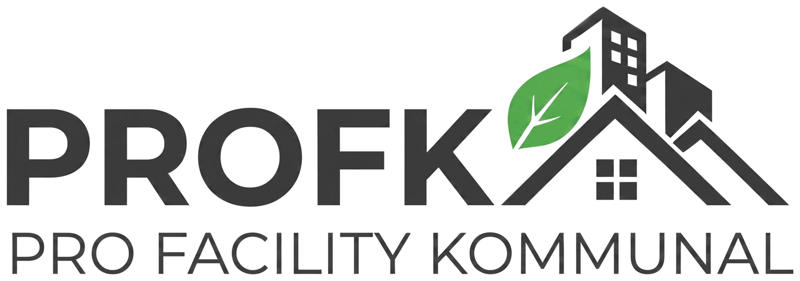

РусскийЗаявки в управляющую компанию — прямо в Telegram
Сломалось, протекло, не горит свет? Подайте заявку за минуту — без установки и паролей.
@profkbot
t.me/profkbot
Как начать — 3 шага
1
Откройте бота по QR-коду, нажмите «Запустить», затем «🏠 Я житель».
2
«📱 Поделиться контактом», затем «📝 Регистрация (форма)»: двор, дом, квартира.
3
Дождитесь «✅ Ваша заявка одобрена!», нажмите «🔄 Перезапустить бота» и откройте «Приложение».
- Паспорт
- Кадастровая выписка (собственник)
- Договор аренды (арендатор)
По кнопке «📤 Загрузить документы» в боте отправьте фото или PDF до 20 МБ. Их видит только УК, после проверки они удаляются.
Что можно делать
Подать заявкус фото и срочностью
Следить за статусомуведомления в чат бота
Писать исполнителюдиалог в карточке заявки
Принять работуоценка 1–5 или возврат
Авто и пропускагде есть шлагбаум
Жалобы и пожелания«Профиль» → «Обратная связь»
Заявка принята, когда у неё есть номер вида 261031-004 — он приходит сразу после отправки. Язык (русский / узбекский) меняется в профиле.
Авария или человек застрял в лифте?
Не ждите ответа на заявку — сразу звоните диспетчеру.
Диспетчер: +998 78 333 19 71 круглосуточно